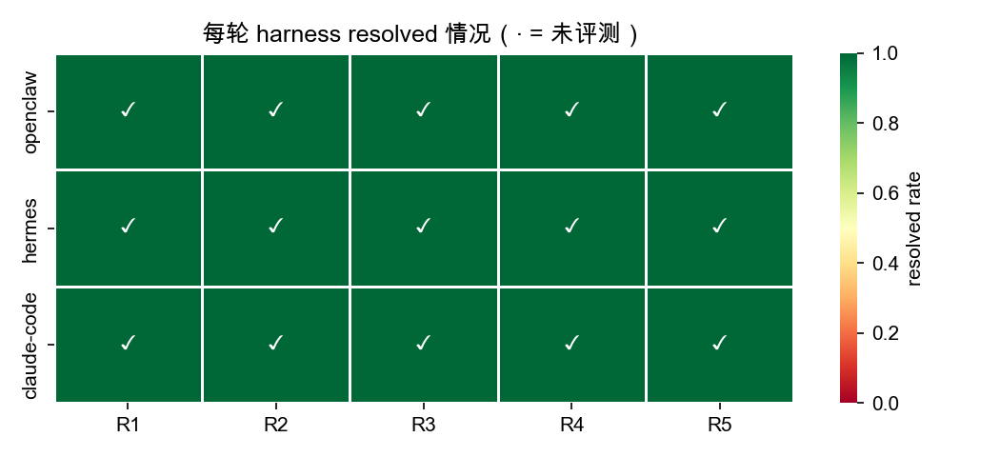
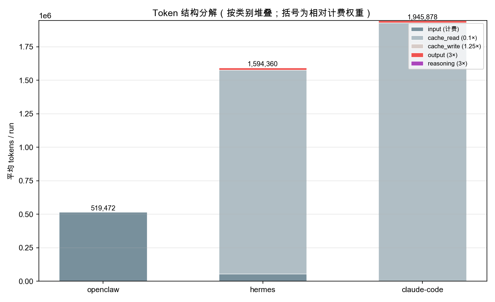
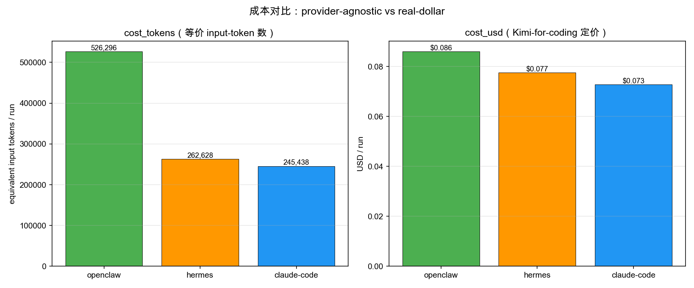
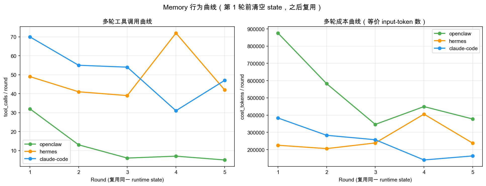

astropy__astropy-12907) 上，
对三套不同实现路径的 coding-agent runtime —— openclaw、hermes、
claude-code (openclaude) —— 进行 3 × 5 = 15 次串行运行的严格对比。
所有 runtime 统一路由到同一后端模型 Kimi K2 for coding，从而排除 LLM 差异，
分离出 runtime 在 (i) token 账面结构、(ii) cache 复用、(iii) 多轮 memory 行为
三个维度上的固有差别。
主要发现：(1) 三者产生了近乎正交的 token profile —— openclaw 完全无 cache，
hermes 约 95% 为 cache_read，claude-code 达到 ~99% cache_read 且 pure_input 为 0；
(2) 在 100% 通过 harness 的前提下，按 provider-agnostic 的 cost_tokens 口径
claude-code 最省 (245 k) < hermes (263 k) < openclaw (526 k)；
(3) memory 复用信号在 openclaw 上最强 (工具调用 R1 → R5 降 84%，延迟降 77%)，
claude-code 中等 (−33%)，hermes 几乎无效应且出现 R4 外点；
(4) 发现并修正了 openclaude 自报的 costUSD 字段 —— 它按 Anthropic Sonnet/Opus
定价估算，对 Kimi 后端高估 ~100 倍，若不纠正会严重污染跨 runtime 成本比较。
我们把这份数据定位为 Phase 0 基础设施验证 —— 它证明度量管道与三种 runtime 的
runtime_state 持久化机制机制层能跑通，但不足以回答 "memory 对真实
用户场景的价值" —— 因为所有任务首轮即过 (任务难度饱和)、且 5 轮连续复跑对应
session 距离 d=0 (真实场景的最特殊情形)。第 6 节据此给出 Phase 1 实验蓝图：
难题任务池 + session 距离 d ∈ {0,1,3,5,10} 作为核心自变量 + memory-on/off 对照。
当我们把不同的 coding-agent runtime 接到同一个 LLM 后端上评测时，
一个常被忽视的问题是：不同 runtime 报出的 token 数字并不在同一口径上。
同一次 LLM 调用，hermes 会把 cache 命中的历史 prompt 计入 runtime_tokens，
openclaw 会把它完全排除，openclaude 的 modelUsage.inputTokens 则直接包含
cacheReadInputTokens。如果简单地做 tokens_total 对齐，
会得到一个严重误导的结论 ——「openclaw 明显最便宜」—— 尽管 openclaw 实际上是
三者中唯一不做 cache 的 runtime，每个 token 都按全价付费。
本报告的目标有三：
本次是 单任务初步实验。单实例本身无法泛化，但它作为 mem5_full 数据管线的 验证跑，目的是 (a) 校验 token/cost 口径正确、(b) 暴露可能的计量陷阱、 (c) 给出值得关注的假设以指导后续多实例扩展。
每个 runtime 在同一任务 astropy__astropy-12907 上跑 5 轮。第 1 轮前清空
runtime_state 目录，第 2–5 轮复用上一轮留下的状态（文件、对话历史、工作笔记等），
即"memory-enabled"模式。每一轮的产出 patch 交由 SWE-bench 官方 Docker harness 独立评测。
| 类别 | 变量 | 值 |
|---|---|---|
| 变量 | Runtime | openclaw / hermes / claude-code |
| 变量 | Round (R) | 1, 2, 3, 4, 5 |
| 常量 | LLM 后端 | Kimi K2 for coding (统一路由) |
| 常量 | 任务 | SWE-bench Verified · astropy__astropy-12907 |
| 常量 | 模式 | repo-mentioned (给 agent 最小仓库上下文) |
| 常量 | 记分 | 官方 SWE-bench Docker harness · resolved 布尔 |
我们在所有 runtime 上强制采用同一 usage_details 词汇：
input_tokens、cache_read_tokens、cache_write_tokens、
output_tokens、reasoning_tokens。
input_tokens 指非 cache 的纯输入，即 openclaude 的
modelUsage.inputTokens 减去 cacheReadInputTokens 之后的值。
这一步让三个 runtime 语义对齐，之后 provider_tokens 与
runtime_tokens 由完全相同的公式派生：
provider_tokens = pure_input + cache_write + output + reasoning runtime_tokens = provider_tokens + cache_read
cost_tokens (provider 无关)：五桶加权求和，权重镜像 Anthropic 相对定价， 让数字在跨 provider 时仍稳定。
cost_tokens = 1.0·pure_input + 0.1·cache_read + 1.25·cache_write + 3.0·output + 3.0·reasoning
cost_usd (Kimi 定价)：按 Kimi-for-coding 公开价折算真美元 (单位 $/M)： input 0.15、cache_read 0.015、cache_write 0.1875、output 2.50、reasoning 2.50。
Token Efficiency Function Score (TEFS) 用于衡量"每 1 k token 产生多少成功任务"：
TEFS = resolved_score / (cost_tokens / 1000)
当 score = 0 或 score = None (未评测) 时 TEFS 返回 None，
而不是 0 —— 这避免了把「花了很多钱但差一点通过」的 run 与「便宜且离题」的 run 混为
"零效率"。
costUSD 不可信 — 校正方案modelUsage.costUSD 字段在运行时用硬编码的 Anthropic
Sonnet / Opus 定价估算，与实际后端无关。当后端是 Kimi-for-coding 时，
input 真实 $0.15/M vs Anthropic Sonnet $3.00/M，差 20×；
output 真实 $2.50/M vs $15/M，差 6×；综合下来 openclaude 自报成本对 Kimi 后端
高估 ~100 倍。本次首轮 smoke 跑时就见到 $8.69 vs 期望 $0.05 的巨大偏差。
修正做法：runner 层把上游原始值保留为 upstream_reported_cost_usd (调试用)，
同时不写入 provider_cost_usd。下游 cost_usd() 函数因此
自动落入后备路径 —— 用 5 桶分解乘以 Kimi 定价重算。测试用例
(test_cost_usd_ignores_upstream_reported_for_openclaude) 锁住这一行为，
防止回归。
15 次运行 全部通过 SWE-bench harness 评测 (图 1)。这意味着
astropy__astropy-12907 对三个 runtime 都算简单任务，任务难度维度在单实例下
被饱和 (saturated)。后续的差异分析必须从过程指标 —— tool_calls、tokens、latency ——
而非 resolved 率切入。

图 2 按五桶堆叠每个 agent 的平均 tokens / run。三种 profile 几乎正交：
cache_read = cache_write = 0，pure_input 占主体 (515.7 k)，
每次调用把 prompt 原样发给 provider，每一个 token 都按 full price 计费。pure_input = 0。这是因为 openclaude 的 modelUsage.inputTokens
完全等于 cacheReadInputTokens，runner 做减法后余数为 0 —— 极端
cache-heavy 的运行模式。
| Agent | cost_tokens | cost_usd | provider_tokens | runtime_tokens |
|---|---|---|---|---|
| openclaw | 526 k | $0.086 | 519 k | 519 k |
| hermes | 263 k | $0.077 | 73 k | 1,593 k |
| claude-code | 245 k | $0.073 | 18 k | 1,946 k |

两个口径给出的排序一致，但含义不同：
| Agent | TEFS | 含义 |
|---|---|---|
| claude-code | 0.0047 | 每 1 k 等价 input-token 0.47% 通过 |
| hermes | 0.0040 | 每 1 k 等价 input-token 0.40% 通过 |
| openclaw | 0.0021 | 每 1 k 等价 input-token 0.21% 通过 |
在 100% resolved 的前提下，TEFS 完全由分母决定。它目前只能解读为"cache 使用模式的效率"， 不能归因为"agent 智能差异"。要让 TEFS 真正刻画能力差异，必须先引入有失败率的任务集。
图 4 展示每个 agent 的 tool_calls 与 cost_tokens 随 round 的变化。state 在 R1 后复用。

| Agent | R1 | R2 | R3 | R4 | R5 | Δ(R5−R1) tools | Δ cost_tokens |
|---|---|---|---|---|---|---|---|
| openclaw · tools | 32 | 13 | 6 | 7 | 5 | −27 (−84%) | −498 k (−57%) |
| openclaw · cost_tokens (k) | 876 | 582 | 346 | 450 | 378 | ||
| hermes · tools | 49 | 41 | 39 | 72 ★ | 42 | −7 | +13 k (+6%) |
| hermes · cost_tokens (k) | 225 | 206 | 239 | 406 | 238 | ||
| claude-code · tools | 70 | 55 | 54 | 31 | 47 | −23 (−33%) | −220 k (−57%) |
| claude-code · cost_tokens (k) | 383 | 283 | 257 | 140 | 163 |
三种行为模式：
hermes 与 claude-code 本身就带 cache 机制 —— 大量"复用历史对话"已经由 LLM provider
层的 cache 吸收，不依赖 runtime 层的 state 复用。因此，当我们把 runtime_state
从头复用给它们时，边际收益被 provider-cache 遮蔽。openclaw 没有 cache，
所有 memory 效应都必须由 runtime 层显式兑现，曲线因此最陡。
一个推论：观测 memory 行为最灵敏的 runtime 是"无 cache + 有 state"的；反过来说， 如果 future 研究希望隔离 memory 贡献，需要把 provider-cache 的贡献显式减除， 否则会低估 memory 的真实价值。
本报告两次给出成本排序，两次都一致 (claude-code < hermes < openclaw)， 但 两者不总是一致。cache_read 的权重差异：cost_tokens 里是 0.1×， cost_usd 里 Kimi 给到 0.1× (0.015 / 0.15)。两个系数相同是巧合 —— 如果后端换成 Anthropic，cache_read 的美元折扣是 0.1× (0.30 vs 3.00)； 若换成 OpenAI 某些 gpt 系列，cache 可能是 0.5×。cost_tokens 保证跨 provider 稳定的横向排序；cost_usd 回答"老板眼中的账单"。必须同时维护。
costUSD 陷阱的警示本次 smoke 验证阶段就见到 openclaude 自报 $8.69 vs 用 Kimi 定价重算后的 $0.05。 若当时没做这个对齐，在全部 15 run 后 $8.69 × 5 = $43 的"openclaude 最贵"的结论 将被写进所有报表。这提醒我们：任何 runtime 自报的 cost 字段都必须先验证它 使用的是不是当前后端的定价。规则：runner 层永远不信任上游 cost；cost 字段统一 在分析层由 token 分解 + 当前后端价重算。
astropy__astropy-12907 对三个 agent 都算首轮即过的简单题，TEFS 排名
因此完全退化为 "cost 谁低" 的等价物，无法分离"能力"与"成本"两个维度。
memory 在此的作用也只限于"让一件本来就能做完的事变得更省"，而不是
"让一件本来做不完的事能做完"。runtime_state/" 的基线。以上局限直接映射到下一步实验的四个设计变量。方案如下 ——
从 SWE-bench Verified 中挑 8–10 道首轮通过率 ≤ 50% 的 instance (参考 SWE-bench 官方的 "hard" 分桶，或自测筛选)。覆盖 repo 多样性 (django / sympy / matplotlib / astropy / requests / scikit-learn)。记任务池 𝒯 = {T₁, ..., T₁₀}。难题是必要条件 —— 只有当首轮有真实失败率， "memory 让第二次更可能成功" 才是一个非平凡命题。
Agent 没有时间感，只有"中间完成了多少任务"的计数感。我们把两次做同一任务 之间穿插的其他任务数 d 定为核心自变量。典型实验序列片段：
session_1 : 任务 A, 任务 B, ..., T_i (首次) ← memory 里开始有 T_i 的条目
session_2 : 任务 X₁ ← 不相关任务，往 memory 里加噪声
session_3 : 任务 X₂
...
session_{2+d} : 任务 X_d ← 共 d 个穿插任务
session_{3+d} : T_i (复现) ← 观察 memory 是否仍被正确检索
每个 session 是独立 subprocess 冷启，只有磁盘上的
runtime_state/ 跨 session 保留。d ∈ {0, 1, 3, 5, 10} 做五组对比 ——
d 增大意味着同一任务的 memory 条目被更多无关条目"埋得更深"。
| 组别 | runtime_state 行为 | 解读 |
|---|---|---|
| memory-on (treatment) | 跨 session 累积保留；每个任务向 memory 追加条目 | 真实 memory 系统 |
| memory-off (control) | 每个 session 开始前清空 runtime_state/ | 无长期记忆的 baseline |
10 任务 × (1 首次 + 5 距离 × 2 对照 × 1 复现) = 110 run / runtime。 3 runtime × 110 = 330 run。按当前单任务均值 ~10 min 估算， 串行约 55 小时；若三 runtime 并行 (不同 Docker 池)，约 19 小时 wall-clock。
benchmarks/swebench_instances.yaml
里显式列出 10 道题的 instance_id、预期难度、预期 wall-clock，让实验可复现且可审计。usage_details.memory_events。这样才能算 6.4 的
"检索命中率"。upstream_reported_cost_usd 偏差。新接入的 runtime
若自报 cost 与当前后端定价偏差 > 5×，CI 报警，避免再次踩 openclaude 那种
100× 高估的口径陷阱。基于 mem5_full_v2 的机制层观察，对 Phase 1 的可证伪假设：
在一个 SWE-bench Verified 实例、三个 coding-agent runtime、共享 Kimi K2 后端的
严格受控对比下，我们发现：三者的 token 账面结构几乎正交
(openclaw 无 cache · hermes 95% cache · claude-code 99% cache)；在 100% 任务通过的
前提下，按 provider-agnostic 的 cost_tokens 口径 claude-code 最省 (245 k)、
openclaw 最贵 (526 k)；memory 复用给 openclaw 带来 84% 的工具调用降幅，
是三者中最强的 memory 信号，原因是它不被 provider-cache 遮蔽。
同时，我们锁定并修正了 openclaude 自报 costUSD 按 Anthropic 定价估算、
对 Kimi 后端高估 ~100 倍的计量陷阱。
但这份数据的定位应当诚实地限定在 "Phase 0 基础设施验证" —— 它证明了 度量管道能跑通、三种 runtime 的 state 持久化机制在机制层都工作。它不足以 回答 "memory 对真实用户体验的价值" ：(a) 本次 100% resolved 使任务成功率 退化为不可区分维度；(b) 5 轮连续同任务对应 session 距离 d=0，是真实使用场景 的最特殊情形。第 6 节提出的 Phase 1 实验 —— 难题任务池 + session 距离 d ∈ {0,1,3,5,10} + memory-on/off 对照 —— 才是对 Direction B 命题的正面回答， 这份 Phase 0 报告是它的前置条件而非结论。
| Agent | R | tools | latency (s) | provider (k) | runtime (k) | pure_in (k) | cache_r (k) | output (k) | cost_tokens (k) | cost_usd |
|---|---|---|---|---|---|---|---|---|---|---|
| openclaw | 1 | 32 | 253 | 857 | 857 | 848 | 0 | 9.3 | 876 | $0.151 |
| openclaw | 2 | 13 | 140 | 578 | 578 | 575 | 0 | 2.4 | 582 | $0.092 |
| openclaw | 3 | 6 | 91 | 343 | 343 | 341 | 0 | 1.8 | 346 | $0.056 |
| openclaw | 4 | 7 | 104 | 446 | 446 | 444 | 0 | 1.9 | 450 | $0.071 |
| openclaw | 5 | 5 | 59 | 374 | 374 | 372 | 0 | 1.7 | 378 | $0.060 |
| hermes | 1 | 49 | 615 | 65 | 1,441 | 53.5 | 1,377 | 11.4 | 225 | $0.057 |
| hermes | 2 | 41 | 494 | 67 | 1,163 | 52.0 | 1,096 | 14.7 | 206 | $0.061 |
| hermes | 3 | 39 | 1,056 | 68 | 1,319 | 45.1 | 1,251 | 22.8 | 239 | $0.083 |
| hermes | 4 | 72 | 1,274 | 98 | 2,672 | 73.0 | 2,574 | 25.1 | 406 | $0.112 |
| hermes | 5 | 42 | 703 | 69 | 1,376 | 50.1 | 1,307 | 18.9 | 238 | $0.075 |
| claude-code | 1 | 70 | 881 | 21 | 3,216 | 0 | 3,195 | 21.3 | 383 | $0.101 |
| claude-code | 2 | 55 | 1,007 | 23 | 2,160 | 0 | 2,137 | 23.1 | 283 | $0.090 |
| claude-code | 3 | 54 | 1,351 | 15 | 2,128 | 0 | 2,113 | 15.4 | 257 | $0.070 |
| claude-code | 4 | 31 | 557 | 13 | 1,033 | 0 | 1,021 | 12.7 | 140 | $0.047 |
| claude-code | 5 | 47 | 526 | 15 | 1,192 | 0 | 1,177 | 15.2 | 163 | $0.056 |
data/raw/swe_astropy__astropy-12907_{agent}_mem5_full_20260417_v2_r{01..05}.json (15 条)；
图：results/mem5_full_v2/{token_breakdown,cost_comparison,memory_curve,resolved_heatmap}.png；
度量实现：analysis/metrics.py；
runner 对齐逻辑：adapters/agent_runner.py；
测试锁：tests/test_metrics.py::test_cost_usd_ignores_upstream_reported_for_openclaude。